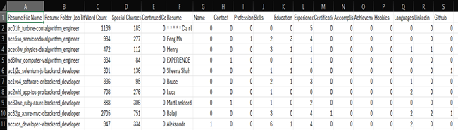

The data we have scraped is in raw structure i.e txt files. We have compiled a single csv from the data to extract some knowledge
out of it (explained in attached image). As the data is a collection of Resume txt files which include alphabets, digits and
special characters in it and no specific format .
As the data we have , the process of cleaning requires usage of NLP (Natural Language Processing) based modelling which will be
part of the next Milestone. So currently we have collected all the txt files that we had into a csv file which checks for some
specific patterns using regex to give us info on the data.
We have performed the following cleanup:
1. We could see some files had ‘0’ word count, hence were empty so we removed them.
2. We identified that a few files had different language (4 files) we removed them as well as we are currently focusing only on
the English language.
3. We have got a brief idea on the special characters count (the files which have 50% word count are mostly corrupted data and
few files do exist) so we have been checking on them. Not removed yet as we will first test the NLP model on them.
4. We have identified a few resume begin with the word continued (which might have been a user error) so we removed that word
5. There was a common text in some resume (“Candidate has been called”) this might have been a part of the Resume feedback.
But as this doesn’t give us any knowledge we have removed them from our data.
6. We expect to gain more insights after training NLP Model on it.
Data Exploration
Data Preprocessing Methodology
Dataset Before vs After Preprocessing
Dataset Before Preprocessing (Raw txt file)

Dataset After Preprocessing (Compiled into csv file)
Data Visualizations
This Graph shows the distribution of the number of most common words in the resume
The Word Cloud visually represents the most frequent terms in the dataset, where larger words indicate higher frequencies.
This provides a quick, intuitive overview of the predominant words or themes in the dataset.
Hence words like 'System' , 'Project', 'Data' , 'Management' appear most frequenctly indicating that they are the dominant words.

When examining a category distribution pie chart, the objective is to comprehend how the data is segmented across various categories. This visualization is particularly effective for comparing the proportions of individual categories to the entire dataset. From the chart beside, it is evident that cloud engineers and data analysts represent the most popular job categories, whereas technical writers and systems administrators rank as the least popular.
This bar chart illustrates the number of resumes available for each job title. Notably, Data Engineer, Full Stack Developer, and Product Manager are among the most commonly available positions.

A heatmap displays the correlation coefficients between multiple variables in a dataset, helping to identify relationships — both positive and negative—among them.
A violin plot of skills by education level is a powerful visualization tool that combines aspects of box plots and density plots to showcase the distribution of skill levels across different educational backgrounds.This helps reveals the distribution and density of skill levels for each education category.

This bar chart displays the Average word count per job title. Devops Engineer being teh highest with a count of close to 1600 and frontend developer having word count of 600.

This histogram displays the number of words in resumes, offering valuable insights into the length trends among candidates. The distribution indicates whether applicants lean towards concise or detailed resumes. Notably, the majority of resumes in our dataset average around 500 words, suggesting a preference for shorter and more succinct presentations.

Stacked area chart is used to show trends over time for multiple categories like skills, education ,experience while illustrating their cumulative effect. It allows for an easy comparison of the total and individual contributions of each category.
A pair plot of skills, education, experience, and certifications can provide valuable insights into the relationships and interactions between these variables in a dataset related to job applicants, employees, or a specific field.
A bubble chart depicting the relationship between word count, experience, and education levels provides a multidimensional view of how these variables interact in resumes. Each bubble represents an individual resume, where the x-axis indicates word count, the y-axis represents years of experience, and the size of the bubble corresponds to the education level (e.g., smaller bubbles for Bachelor’s degrees and larger ones for Master’s or PhDs).